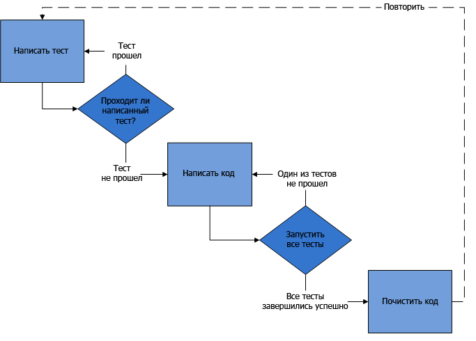

Тестирование
Тестирование - Зачем
- текущий функционал соответствует заявленному
- ранее обнаружение проблем
- сокращение временных затрат
- как документация
Тестирование - Недостатки
- надо писать
- надо уметь писать
- надо поддерживать
- нет гарантий
Тестирование - Режимы
- ручное
- автоматическое
Тестирование - Виды
- модульные
- интеграционные (взаимодействие модулей)
- приемочные (система в целом)
Тестирование - Типы
- функциональное
- конфигурационное
- нагрузочное
- производительности
- безопасности
- юзабилити
- ...
TDD
Test-driven development
TDD
TDD

TDD - Преимущества
- фокус на функционале
- предварительное обдумывание архитектуры
- стимулирует к меньшей связанности
- более безопасное написание нового кода
- легкий рефакторинг
TDD - Недостатки
- не все можно протестировать
- не все удобно тестировать
- временные затраты
Unit-tests
Модульные тесты
rectangle.js
class Rectangle {
constructor(x1, y1, x2, y2) {
this.x1 = x1;
this.x2 = x2;
this.y1 = y1;
this.y2 = y2;
}
width() { return Math.abs(this.x1 - this.x2); }
height() { return Math.abs(this.y1 - this.y2); }
isSquare() {return this.width() === this.height(); }
}
module.exports = Rectangle;
Jest - Docs
npm install --save-dev jest
package.json
{
"name": "tests-example",
"version": "1.0.0",
"scripts": {
"test": "jest"
},
"devDependencies": {
"jest": "^18.1.0"
},
"jest": {
"verbose": true,
"testEnvironment": "node"
}
}
tests/rectangle.spec.js
describe("A suite", () => {
it("contains spec with an expectation", () => {
expect(true).toBe(true);
});
});
npm test

tests/rectangle.spec.js
const Rectangle = require('../rectangle');
describe('Тестовый набор для Rectangle', () => {
let x1, x2, y1, y2;
beforeEach(() => { ... });
describe('>> модуль', () => { ... });
describe('>> конструктор', () => { ... });
describe('>> методы width и height', () => { ... });
describe('>> метод isSquare', () => { ... });
});
tests/rectangle.spec.js
beforeEach(() => {
x1 = 0;
y1 = 0;
x2 = 3;
y2 = 2;
});
tests/rectangle.spec.js
describe('>> модуль', () => {
it('должен импортировать функцию', () => {
expect(typeof Rectangle).toBe('function');
});
});
tests/rectangle.spec.js
describe('>> конструктор', () => {
it('должен принимать числа', () => {
let rect = new Rectangle(x1, y1, x2, y2);
expect(rect.x1).toEqual(x1);
expect(rect.x2).toEqual(x2);
expect(rect.y1).toEqual(y1);
expect(rect.y2).toEqual(y2);
});
...
});
tests/rectangle.spec.js
describe('>> конструктор', () => {
...
it('должен приводить параметры к числовому типу', () => {
x1 = x1.toString();
y1 = y1.toString();
x2 = x2.toString();
y2 = y2.toString();
let rect = new Rectangle(x1, y1, x2, y2);
expect(rect.x1).toEqual(parseInt(x1));
expect(rect.x2).toEqual(parseInt(x2));
expect(rect.y1).toEqual(parseInt(y1));
expect(rect.y2).toEqual(parseInt(y2));
});
...
});
tests/rectangle.spec.js
describe('>> конструктор', () => {
...
it('должен бросать исключение,
если точки одинаковые', () => {
expect(() => {
new Rectangle(x1, y1, x1, y1);
}).toThrowError(/Точки совпадают/);
});
...
});
tests/rectangle.spec.js
describe('>> конструктор', () => {
...
it('должен бросать исключение, если любой из
параметров не может быть
приведен к числу', () => {
expect(() => {
new Rectangle('asd', y1, x2, y2);
}).toThrowError(/Разрешены только числа/);
});
...
});
tests/rectangle.spec.js
describe('>> методы width и height', () => {
it('должны вычислять соответствующие величины', () => {
let rect = new Rectangle(x1, y1, x2, y2);
let width = Math.abs(x1 - x2),
height = Math.abs(y1 - y2);
expect(rect.width()).toEqual(width);
expect(rect.height()).toEqual(height);
});
});
tests/rectangle.spec.js
describe('>> методы width и height', () => {
it('должны вычислять соответствующие величины вне зависимости от порядка точек', () => {
let rect1 = new Rectangle(x1, y1, x2, y2),
rect2 = new Rectangle(x2, y2, x1, y1);
let width = Math.abs(x1 - x2),
height = Math.abs(y1 - y2);
expect(rect1.width()).toEqual(width);
expect(rect2.width()).toEqual(width);
expect(rect1.height()).toEqual(height);
expect(rect2.height()).toEqual(height);
});
});
tests/rectangle.spec.js
describe('>> метод isSquare', () => {
it('должен возвращять true, если стороны равны', () => {
y2 = 3;
let rect = new Rectangle(x1, y1, x2, y2);
expect(rect.isSquare()).toBe(true);
});
});
tests/rectangle.spec.js
describe('>> метод isSquare', () => {
it('должен возвращять false, если стороны неравны', () => {
let rect = new Rectangle(x1, y1, x2, y2);
expect(rect.isSquare()).toBe(false);
});
});
rectangle.js
// должен приводить параметры к числовому типу
constructor(x1, y1, x2, y2) {
this.x1 = parseFloat(x1);
this.x2 = parseFloat(x2);
this.y1 = parseFloat(y1);
this.y2 = parseFloat(y2);
}
rectangle.js
// должен бросать исключение, если любой
// из параметров не может быть приведен к числу
constructor(x1, y1, x2, y2) {
...
if (isNaN(this.x1)
|| isNaN(this.x2)
|| isNaN(this.y1)
|| isNaN(this.y2)) {
throw new Error('[Rectangle]: Разрешены только числа');
}
...
}
rectangle.js
// должен бросать исключение, если любой
// из параметров не может быть приведен к числу
constructor(x1, y1, x2, y2) {
...
if (this.x1 === this.x2 && this.y1 === this.y2) {
throw new Error('[Rectangle]: Точки совпадают');
}
}